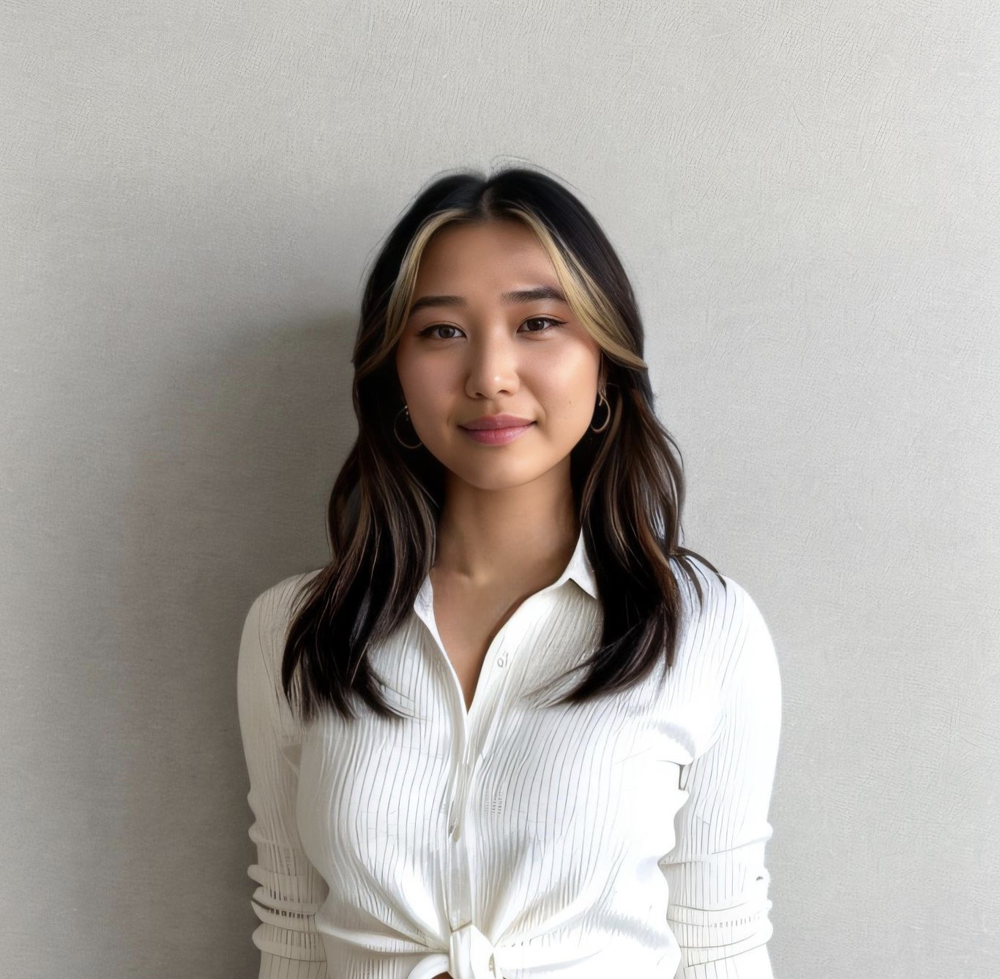

Nadine Khuc

Objective
Through many years of international experience both living,
working and studying abroad I developed a deep cross-cultural understanding, which enabled me to quickly learn and adapt in new situations.
Combined with my studies of international management and my volunteering/hospitality experience I developed excellent decision making and problem solving skills on a business and social level,
to create environments that enabled my team members and myself to truly thrive.
Education
- BSc International Business Management (East Asia)
October 2018 - August 2023
- Extracurricular courses beside compulsory studies: Audit Strategies, Audit Principles
- Department of Language and Culture
February 2022 - July 2022
- The Confucius Scholarship
August 2019
- Gained a deeper understanding of cross-cultural aspects
Work Experience
- Success Intern Orderchamp
October 2022
- Educated new customers back office functionality and performance expectations
- Managed brand performance on the platform using various tools like Zendesk and Notion
- Processed customer requests via phone, email and live chat
Community Work
- Volunteer at Homeless Shelter Stitchig Stoelenproject
January 2023- Present
- Assisting in various task these include food preparation,
serving meals and facility cleaning while creating and ensuring a safe environment for visitors
- Anonomyous Author - Sorgen-Tagebuch e.V.
January 2019 - January 2022
- Mentored and advised individuals dealing with various psychological,
health related and general life situations
Skills
- Microsoft
- Interpersonal Skills
- Teamplayer
- Problem-Solving Skills
- Analythical Thinkig
Contact me
Mobile Number: +49 16318xxxxx
E-Mail: mn.khuc@gmail.com